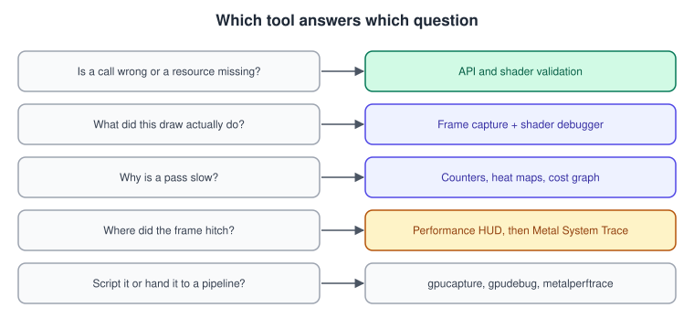
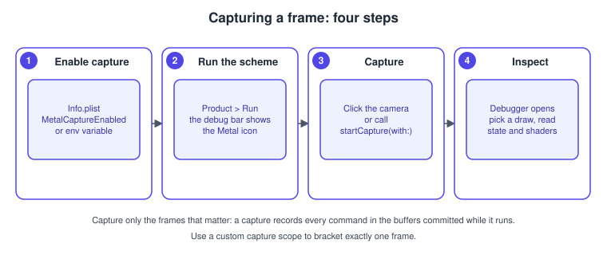
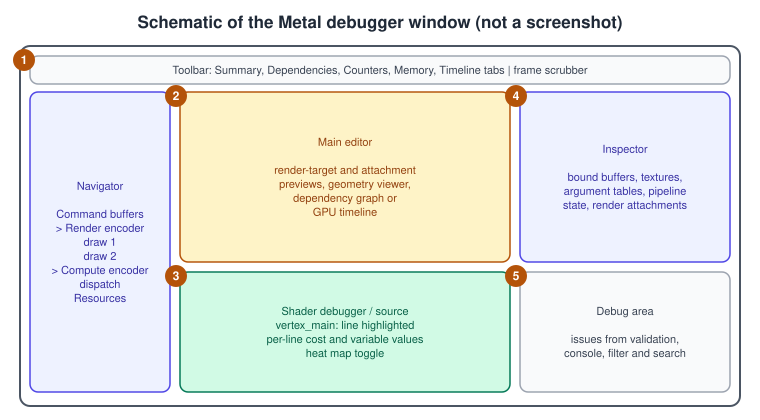
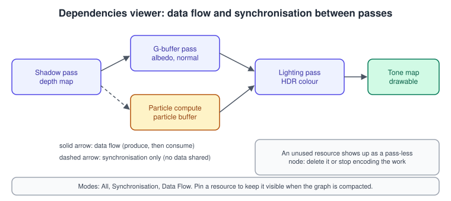
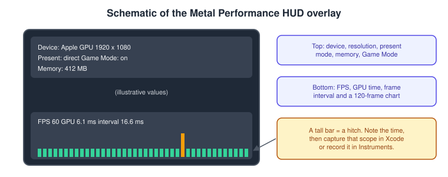
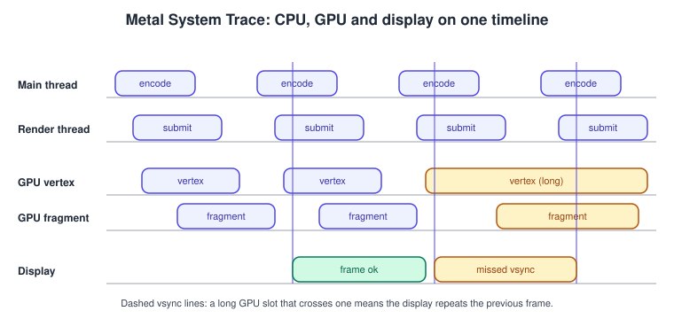

Debugging and Profiling Metal
|
This content was generated with the assistance of AI and should be verified against the official documentation before being relied on in production. |
Graphics bugs and graphics slowness share one trait: the answer is on the GPU, and the GPU does not stop at a breakpoint. Apple’s Metal tools solve that in a handful of ways: validation layers that check your calls and your shaders while the app runs, a frame capture that records a frame so you can inspect every command, resource and shader afterwards, a heads-up display and a system trace that show timing while the app runs normally, and command-line tools that do the same work from a script. This page explains each, in the order you would reach for them, and how they fit one workflow.
The facts were checked in November 2026. The tools documented are the Metal tooling of Xcode 27 (which needs an Apple-silicon Mac
on macOS 26.6 or later), Instruments, and the command-line tools gpucapture, gpudebug and metalperftrace that Apple’s tools page lists
among the WWDC26 additions. Captures work for Metal 3 and Metal 4 apps, on iOS, iPadOS, macOS, tvOS and visionOS devices and on Mac. Some analyses
depend on the GPU: the performance heat maps and the shader cost graph are documented for A17 and M3-class GPUs and later, and counter
sets differ per GPU family. The page says so where it matters.
In the running example (the Bookshelf: a multiplatform SwiftUI app hosting an MTKView, with a Metal 4 path and a Metal 3
fallback, plus a visionOS target) we use a single bug throughout: after the shadow map was added, the lower shelf shows no shadow. The
walk-through at the end shows which tool finds which part of it. General Apple-platform profiling and LLDB are covered in
Performance and Instruments and
Debugging with Xcode and LLDB; this page keeps to what is specific to Metal. The
OpenGL equivalent of this page is Debugging and Tools (OpenGL); the tuning
advice that the measurements lead to is in Metal Performance Best Practices and the general
discussion is in Performance and Profiling.
Which tool for which question

| Question | Tool | Cost while enabled |
|---|---|---|
Is my API call wrong, or is a resource missing, out of bounds or not resident? |
API Validation, Shader Validation |
API Validation: small CPU cost. Shader Validation: instruments every shader and slows the GPU work, and shaders take longer to compile. |
What did this draw or dispatch really do? |
Frame capture, then the Metal debugger and the shader debugger |
Capture enabled: tiny CPU cost. Capturing a frame: one slow frame. |
Why is this pass slow? |
GPU counters, timeline, performance heat maps and shader cost graph (in the debugger) |
Only while you analyse a capture. |
Where does the frame hitch, and is it CPU or GPU? |
Metal Performance HUD, then Metal System Trace (Game Performance template) in Instruments |
HUD: small. Instruments: moderate. |
Can I script or repeat the investigation, or hand it to a build job or an agent? |
|
The same as the underlying operation. |
Prepare the app
A few lines of code make every tool more useful. None of them changes rendering.
Labels, debug groups and signposts
Most Metal objects have a label; give each buffer, texture, pipeline and queue a meaningful one. On command buffers and encoders,
pushDebugGroup(_:) and popDebugGroup() bracket a logical section, and an encoder’s insertDebugSignpost(_:) marks a point.
Everything appears in the debugger’s navigator and in Instruments, so a capture reads instead of
"Render Command Encoder 7".
import Metal
func encodeShadowPass(commandBuffer: MTL4CommandBuffer,
descriptor: MTL4RenderPassDescriptor,
pipeline: MTLRenderPipelineState) {
commandBuffer.pushDebugGroup("Frame 1042")
guard let encoder = commandBuffer.makeRenderCommandEncoder(descriptor: descriptor, options: []) else {
commandBuffer.popDebugGroup()
return
}
encoder.label = "Shadow pass"
encoder.pushDebugGroup("Shelf boards")
encoder.setRenderPipelineState(pipeline)
// ... draws ...
encoder.insertDebugSignpost("boards done")
encoder.popDebugGroup()
encoder.endEncoding()
commandBuffer.popDebugGroup()
}Source: Naming resources and commands
The calls also exist on MTLCommandBuffer and the Metal 3 encoders. Debug groups are a stack that lives only for the lifetime of the buffer or
encoder, so every push needs a pop on the same object.
Embedded shader sources
To step through shaders in Xcode, the build must keep the source: in the Metal Compiler build options set Produce Debugging Information to Yes, include source code for Debug. Alternatively generate a separate symbol file per library to debug a release build. Reset the Release setting to No before shipping, so you do not distribute the source.
Capture support
Frame capture from inside your app (and from some tools) needs capture to be enabled: add the MetalCaptureEnabled key with a value of
YES to Info.plist, or on macOS 14 and later set the environment variable MTL_CAPTURE_ENABLED=1. It has a tiny, measurable
CPU cost, so enable it for development builds through a build setting. Xcode’s own capture button works without it when you run
from Xcode.
API validation and shader validation
Both are in the scheme’s Run > Diagnostics tab, or controlled with environment variables; run man MetalValidation for the full list.
Turn both on in Debug builds and keep them on while developing new passes.
API Validation
API Validation checks the calls you make: incorrect resource creation, bad encoding (a draw without a pipeline, mismatched pixel formats, missing argument-table entries), and other common mistakes. Extra options on the Diagnostics tab:
-
Include load and store actions changes a
dontCareload action to a fuchsia clear and writes a red and white checkerboard into render targets with adontCarestore action. If your image shows fuchsia or a checkerboard, a pass reads data it assumed was kept. This is the quickest way to find wrong load and store actions (see Render Passes and Load/Store Actions). -
Log non-fatal actions adds logging for incorrect or suboptimal usage that does not stop the app, a lint for Metal use.
API Validation has a small, measurable CPU cost.
Shader Validation
Shader Validation finds errors that exist only while a shader runs. Apple lists what it detects:
| Issue | Typical cause |
|---|---|
Resource not resident |
A resource used by a shader or a Metal 4 command is in no residency set of the command buffer or queue and not in a |
Out-of-bounds memory access |
Reading or writing outside a buffer, or using a wrong index, slice or rank of a tensor. |
Misuse of Metal Performance Primitives |
Wrong tensor ranks, alignment, strides or planes in TensorOps. |
Undefined interpolant behaviour |
|
Null resource use |
Sampling a |
Illegal address-space cast |
Casting a generic-address-space pointer to the wrong specific space. |
Binding of the wrong texture type or acceleration structure type |
The shader expects a 2D texture or an instance acceleration structure and the app binds another kind. |
Usage flag mismatch (before Metal 4) |
A texture is used in a way that contradicts the usage given to |
Details to know:
-
The layer instruments every function, so GPU time rises and pipelines compile slower. It is for development, not for profiling.
-
Set the deployment target to the matching OS version, even temporarily, to get the most up-to-date diagnostic information.
-
Options on the Diagnostics tab: Raise Runtime Issues on Error shows the errors in the Issue navigator (and lets you add a shader breakpoint), and Abort on Error stops the app at the first error, which you want when repeated GPU restarts make the system unresponsive.
-
Pipelines expose
shaderValidationstate, andMTL4PipelineOptions.shaderValidationlets you enable or disable validation for a single pipeline, which helps when only one shader is suspect and the rest need to run at full speed.
For the Bookshelf bug, "resource not resident" is the first suspect: the shadow map is written in one pass and sampled in another, and in Metal 4 it must be in a residency set.
Shader logging
Shader logging prints messages from inside a shader to the Console app, the log command-line tool and Xcode’s debug area. Apple documents it
for Metal 3.2 and later on iOS 18, iPadOS 18, macOS 15, tvOS 18 and visionOS 2 and later. To use it:
-
Add
-fmetal-enable-loggingto Other Metal Compiler Flags (or set the equivalent property onMTLCompileOptionswhen compiling source). -
Set the environment variables
MTL_LOG_LEVEL(the minimum level to record; default debug) andMTL_LOG_BUFFER_SIZE(bytes of log storage, from 1 KB to 1 GB, default 1024). A full buffer discards later messages. -
Call
os_logfunctions in the shader. Create anos_loginstance to give messages a subsystem and category for filtering.
Logs drain when the command buffer finishes, so the order of messages across command buffers is not guaranteed. Log from a single thread
of the grid (if (tid == 0)), or the buffer fills with identical lines. The API objects are MTLLogStateDescriptor (level, bufferSize) and MTLLogState.
Frame capture

A capture records every Metal command the app commits during the captured frames, with the resources they use, and lets Xcode replay them on the GPU so you can inspect any point.
Capture from Xcode
-
Run the scheme from Xcode with a Metal view on screen.
-
Click the Metal capture button in Xcode’s debug bar.
-
Xcode captures the next frame and opens the Metal debugger.
-
Choose a tab (Summary, Dependencies, Memory, Timeline, Counters) and select a command in the navigator.
Source: Metal debugger
Capture from code
Capturing in code lets you capture exactly one frame, on a key press, at a frame number, or when the frame time spikes. The capture manager captures only the command buffers that you create after the capture starts and commit before it stops.
import Metal
enum FrameCapture {
/// Starts a capture of everything committed to `queue` and writes it to a .gputrace file.
/// Call `stop()` after the frames you want have been committed.
static func start(device: MTLDevice, queue: MTL4CommandQueue, to folder: URL) throws {
let manager = MTLCaptureManager.shared()
guard manager.supportsDestination(.gpuTraceDocument) else {
throw CocoaError(.featureUnsupported) // Info.plist MetalCaptureEnabled is missing
}
let descriptor = MTLCaptureDescriptor()
descriptor.captureObject = queue // a device, a queue or a capture scope
descriptor.destination = .gpuTraceDocument
descriptor.outputURL = folder.appendingPathComponent("bookshelf.gputrace")
try manager.startCapture(with: descriptor)
}
static func stop() {
let manager = MTLCaptureManager.shared()
if manager.isCapturing { manager.stopCapture() }
}
}
/// A custom scope that brackets exactly one frame, so the Xcode capture button captures that frame.
func makeFrameScope(device: MTLDevice, queue: MTL4CommandQueue) -> MTLCaptureScope {
let manager = MTLCaptureManager.shared()
let scope = manager.makeCaptureScope(device: device)
scope.label = "Bookshelf frame"
manager.defaultCaptureScope = scope
return scope
}
// Per frame: scope.begin() ... encode and commit command buffers ... scope.end()Notes on capturing:
-
Give the output a
.gputraceextension, so that Xcode andgpudebugcan open the file later. The destinations aredeveloperTools(open in Xcode) andgpuTraceDocument(write a file); asksupportsDestination(_:)first. -
A capture can span several frames: call
startCaptureat the start of frame 1 andstopCaptureafter frame 3 and the trace holds all of them. -
With a custom capture scope, capture stops when
end()is reached, and only the buffers created afterbegin()and committed beforeend()are captured. -
Set
defaultCaptureScopeso that Xcode’s capture button uses your scope instead of a frame boundary guessed frompresent. -
A trace file can be replayed on another Mac, on a device, or by
gpudebug; large traces take seconds to minutes to load. -
Capturing slows one frame down a lot. Do not use that frame’s timings.
The Metal debugger

The debugger is organised by what you ask. The numbered areas in the schematic:
-
Toolbar and tabs. Switch between the analyses below; a scrubber lets you move between captured frames.
-
Navigator and main editor. Navigate the tree of command buffers, encoders and draws; the editor shows what is selected (an attachment, a geometry view, the dependency graph or the timeline).
-
Shader area. The shader source with per-line cost, variable values and execution history for the selected pixel or thread.
-
Inspector. The bound buffers, textures, argument tables, pipeline state and attachments of the selected command.
-
Debug area. Issues from validation, and a console.
Inspecting resources and commands
-
Per command.
Inspecting the bound resources for a commandshows what a draw or dispatch actually had bound, including argument-table contents.Inspecting the geometry of a draw commandshows the vertices (post-vertex-shader positions in 3D), andInspecting the attachmentsshows each render target before and after the draw, which is the way to find where an artifact first appears. -
Per resource. Inspectors exist for acceleration structures, buffers (view as a structured array), pipeline states, sampler states, shaders and textures (every slice, mip level and channel; useful for a shadow map).
-
Debugging a missing shadow. Step through the draws of the shadow pass, view the depth attachment after each, then open the lighting pass and check that the shadow map is the texture bound at the slot the fragment shader samples. A texture bound to the wrong slot or a map that is empty because its pass wrote nothing explains most "no shadow" bugs.
Dependencies

The Dependencies viewer draws the structure of the frame: command buffers, encoders and passes, each with a thumbnail and the number of resources it consumes and produces. Zooming in expands the resources of a pass. Icons above and below a resource say how a pass consumes or produces it; for attachments these are the load and store actions, otherwise generic reads and writes. Edges:
-
Solid lines are data flow: an earlier pass produced data and a later one consumes it.
-
Dashed lines are synchronisation: nothing is shared, but the second pass must wait for the first. A pass that clears an attachment has no data dependency on whoever wrote the texture before, yet it must wait.
The modes are All, Synchronization and Data Flow. Pinning resources keeps them visible in the compacted graph. Use it to spot passes with no consumers (work you can delete), missing edges (a barrier you forgot, which Shader Validation may also report), and unnecessary synchronisation that serialises work that could overlap. See Synchronization and Barriers.
Memory
The Memory viewer shows live memory by category with the largest resources as segments, and a table of every resource with its size and
configuration. Use it to find textures without mipmaps that are bigger than needed, shared resources that could be private, and heaps
that are mostly empty (see
Resource Loading and Streaming).
Shader debugger, heat maps and cost graph
The shader debugger runs the captured draw or dispatch and lets you pick a pixel, vertex or thread and see the values of variables line by line, the execution history, and function calls. Performance analysis adds:
-
Performance heat maps visualise a set of metrics per pixel or per thread to find the expensive ones; you can select a SIMD group to see its entire execution history, with function calls, loop iterations and active threads. Apple documents them for A17 and M3-class GPUs and later.
-
Shader cost graph, from the same family of analyses, shows where in the call graph the shader’s time goes (A17 and M3 and later).
-
Per-line cost in the source shows which lines the GPU spent its time on.
Timeline and counters
The Timeline is a visual view of the GPU’s work over the frame (on Apple GPUs: vertex, fragment, compute, blit, and so on, overlapping or serialised). The Counters tab gives per-pass and per-command statistics such as occupancy, ALU and memory utilisation and bandwidth, and the performance limiters that tell you whether a pass is bound by compute, by memory or by the fixed-function hardware. Apple’s guides Finding your Metal app’s GPU occupancy, Reducing shader bottlenecks and Measuring the GPU’s use of memory bandwidth walk through reading them. The workflow is always: find the slowest pass in the timeline, look at its limiter in the counters, open the heat map for the expensive pixels, and use the shader debugger for the lines.
The Metal Performance HUD

The HUD adds a real-time overlay to the app and optionally logs the numbers. By default the top shows the Metal device, the resolution, whether presentation is direct or composited, the memory allocated by the app and Metal, and whether Game Mode is on. The bottom shows average FPS, GPU time, the frame interval, and a chart of the last 120 frame intervals. Its purpose is to find when the problem happens, so that you can capture exactly that scope in Xcode or record it in Instruments.
| Way to enable it | How |
|---|---|
From Xcode |
Edit Scheme > Run > Diagnostics > Show Graphics Overview; add Log Graphics Overview to write per-frame statistics to the console once per second. |
Environment variable |
Set on the app; |
On a device |
Settings > Developer > Graphics HUD > Show Graphics HUD and Log Graphics Performance (iOS, iPadOS, tvOS; needs a development provisioning profile and an app you built and installed). |
In the app bundle |
Add |
The configuration panel adds more metrics; some appear only with MetalFX (see
MetalFX Upscaling and Frame Interpolation) or in the Game Porting Toolkit
environment. With shader compiler logging on, the HUD emits a signpost for each compiled shader (subsystem com.apple.metal.hud, category Logging), which
is how you find pipelines compiled mid-game (see
Shader Compilation and Pipeline Caching).
How to read it: a steady frame interval with high GPU time means the GPU is the limit; a spiky interval with low GPU time means the CPU, a synchronisation or shader compilation is. The tall bar in the schematic is a hitch to capture or trace.
Metal System Trace in Instruments

Where the debugger explains one frame, Instruments shows many frames in time. Choose Product > Profile (Command-I), pick the Game Performance template, which combines threading and system-call information with the Metal System Trace instrument, and record while you reproduce the problem.
-
Display track. Each display instance is a frame as the user sees it. Hover for its duration. At 60 Hz a healthy frame is 16.67 ms; a 50 ms display instance is a stutter, and the lane shows how many vsync events were skipped. A steady 20 ms (50 fps) is a healthy frame rate if it is consistent; display intervals are not always 16 ms.
-
GPU tracks. The GPU hardware track shows the shader stages running on the shader cores; long or inconsistent stages indicate utilisation problems. Counters are off by default: in Recording Options choose the Performance Limiters counter set to record limiter and utilisation data.
-
CPU tracks. Show when the app encodes and submits; a gap between submit and GPU start shows queueing, and a long CPU encode shows an encoding bottleneck.
-
Narrow the range. Select the time around the slow frames before drilling down; sometimes the anomaly is an occasional skipped frame and sometimes it is consistently poor frame rate, and the two need different fixes.
GPU timestamps in your own code
For in-game profilers, a debug overlay or telemetry, read GPU time yourself. Metal 4 uses a counter heap:
import Metal
/// Measures the GPU time between two points of a Metal 4 command buffer.
final class GPUTimer {
private let heap: MTL4CounterHeap
private let device: MTLDevice
init(device: MTLDevice) throws {
self.device = device
let descriptor = MTL4CounterHeapDescriptor()
descriptor.type = .timestamp
descriptor.count = 2
heap = try device.makeCounterHeap(descriptor: descriptor)
}
func begin(_ commandBuffer: MTL4CommandBuffer) {
commandBuffer.writeTimestamp(counterHeap: heap, index: 0)
}
func end(_ commandBuffer: MTL4CommandBuffer) {
commandBuffer.writeTimestamp(counterHeap: heap, index: 1)
}
/// Call after the command buffer has finished (for example from a feedback handler or a later frame).
func milliseconds() -> Double? {
guard let data = try? heap.resolveCounterRange(0..<2), data.count >= 2 * MemoryLayout<UInt64>.stride else {
return nil
}
let entries = data.withUnsafeBytes { Array($0.bindMemory(to: MTL4TimestampHeapEntry.self)) }
let ticks = entries[1].timestamp &- entries[0].timestamp
return Double(ticks) / Double(device.queryTimestampFrequency()) * 1000.0
}
}Source: MTL4CounterHeap
Timestamps are comparable only within the same device and queue, and the interval includes anything the GPU was waiting on between the two
points. Metal 3 offers the equivalent MTLCounterSampleBuffer, sampled at stage boundaries of an encoder. Use these for budgets, and use the
debugger’s counters for explanations. The HUD’s encoder timing option cannot be combined with the counter APIs, so enable only one.
Command-line tools
Apple’s tools page lists three command-line tools "built for scripts and agentic workflows". They let you capture, replay and trace without opening Xcode, in CI or on a remote machine.
| Tool | Use |
|---|---|
|
Capture a GPU workload from the command line, without Xcode. See |
|
Open a |
|
Metal performance tracing from the command line. See |
gpudebug is documented in detail. Start it on a trace; you get a session number and a prompt. The tree has four children,
commands, performance, api_calls and resources; list shows the nodes, go descends, info pipeline prints a pipeline’s entry points,
attachment formats and vertex layout, and fetch writes an attachment as a PNG:
gpudebug bookshelf.gputrace # starts a session and prints its number
# at the prompt:
# list show the children of the current node
# go commands descend into the command buffers and passes
# info pipeline entry points, attachment formats, vertex layout
# fetch save the draw's colour attachment as a PNG
gpudebug -s 1 # reconnect to session 1 later
# exit --terminate end the session when you are doneUseful properties: the api_calls subtree is a flat, chronological list of every Metal call with its arguments, and draw, dispatch and blit nodes link to their API call
and back (go :d jumps from an API call to its draw, go :a from a draw to its call). Sessions persist after you disconnect and can be reused (-s) so that
a large trace loads once; --oneshot creates a session, runs the commands and ends it, at the price of loading the trace every time. By default gpudebug replays on the local
GPU and it can target a remote device while Xcode is running. Because the interface is text and self-describing, Apple suggests pointing an AI agent at man gpudebug and a trace file to investigate
autonomously. As with any such use, treat the agent’s conclusions as hypotheses to check in the debugger.
A worked investigation: the missing shadow
The findings below are an illustrative walk-through of the order in which to use the tools, not recorded measurements.
-
Validate. Run with API and Shader Validation. Shader Validation reports "resource not resident" for the shadow map in the lighting pass. Add it to the residency set.
-
Still dark? Capture a frame. Open Dependencies: the lighting pass has no incoming data-flow edge from the shadow pass, so the shadow map is not bound as the lighting pass’s input. A solid edge appears once it is.
-
Inspect. Select the shadow pass’s last draw and view its depth attachment: the shelf is there. In the lighting pass’s bound resources the shadow map is at texture slot 2 while the fragment shader reads slot 1.
-
Fix and measure. With the shadows right, suppose the HUD shows the GPU time over budget. The timeline points at the shadow pass, the counters show it limited by memory bandwidth, and the attachment inspector shows an oversized, wide-format shadow map. A smaller, depth-format map cuts the cost.
-
Trace. Suppose a long hitch appears when the first book is knocked off the shelf. In Instruments it lines up with a pipeline compiled on first use, and the HUD signpost names it. Move it to the warm-up.
Where the books are outdated
| Book | Statement | Today |
|---|---|---|
MBT ch. 31 (Metal by Tutorials, 4th ed.) |
Profiling with the GPU frame capture UI of its Xcode. |
Xcode 27 has the Performance HUD, the Summary and Shaders analyses, GPU trace export and replay, more validation (Shader Validation covers tensors and Metal 4 residency),
performance heat maps and the shader cost graph on newer GPUs, and the command-line tools |
CLA (Metal Programming Guide, Xcode 9) |
Written for Xcode 9 and an A7 baseline. |
Xcode 27 debugs devices running iOS 17 and later; Metal 4 needs an A14 or an M1. |
Both books |
Do not cover shader validation, shader logging or the Performance HUD. |
These are official concepts missing from both books. |
Common mistakes
-
Profiling with validation on. Shader Validation and API Validation change timing; turn them off to measure.
-
Profiling a captured frame. Capture slows replay; use the HUD and Instruments for timing and the capture for explanation.
-
Labels forgotten. An unlabelled capture is hard to read; label as you create.
-
No debug info in the shader build. The shader debugger shows no source until Produce Debugging Information includes the source.
-
Capturing the wrong queue. Set the capture object to the queue you commit to, or use a custom scope.
-
Forgetting residency. In Metal 4 the most frequent GPU fault is a missing residency set entry; Shader Validation reports it.
-
Measuring in Simulator. The Simulator’s GPU is not a device GPU; measure on hardware.
-
Optimising before measuring. Find the slowest pass first; the debugger’s counters tell you whether to look at ALU, bandwidth or memory.
References
-
Metal developer tools: https://developer.apple.com/metal/tools/
-
Metal debugger: https://developer.apple.com/documentation/xcode/metal-debugger
-
Metal developer workflows: https://developer.apple.com/documentation/xcode/metal-developer-workflows
-
Capturing a Metal workload programmatically: https://developer.apple.com/documentation/xcode/capturing-a-metal-workload-programmatically
-
Analyzing resource dependencies: https://developer.apple.com/documentation/xcode/analyzing-resource-dependencies
-
Analyzing memory usage: https://developer.apple.com/documentation/xcode/analyzing-memory-usage
-
Debugging the shaders within a draw command or compute dispatch: https://developer.apple.com/documentation/xcode/debugging-the-shaders-within-a-draw-command-or-compute-dispatch
-
Validating your app’s Metal API usage: https://developer.apple.com/documentation/xcode/validating-your-apps-metal-api-usage
-
Validating your app’s Metal shader usage: https://developer.apple.com/documentation/xcode/validating-your-apps-metal-shader-usage
-
Logging shader debug messages: https://developer.apple.com/documentation/metal/logging-shader-debug-messages
-
Monitoring your Metal app’s graphics performance: https://developer.apple.com/documentation/xcode/monitoring-your-metal-apps-graphics-performance
-
Analyzing the performance of your Metal app: https://developer.apple.com/documentation/xcode/analyzing-the-performance-of-your-metal-app
-
Debugging with interactive command-line tools: https://developer.apple.com/documentation/xcode/debugging-with-interactive-command-line-tools
-
Investigating GPU issues with AI agents: https://developer.apple.com/documentation/xcode/investigating-gpu-issues-with-ai-agents
-
Naming resources and commands: https://developer.apple.com/documentation/xcode/naming-resources-and-commands
-
MTLCaptureManager: https://developer.apple.com/documentation/metal/mtlcapturemanager
-
MTL4CounterHeap: https://developer.apple.com/documentation/metal/mtl4counterheap
-
Metal by Tutorials (publisher page): https://www.kodeco.com/books/metal-by-tutorials
-
Metal Programming Guide (publisher page): https://www.informit.com/store/metal-programming-guide-tutorial-and-reference-via-9780134668949